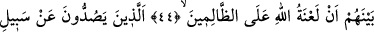

CENNET VE CEHENNEM
EHLİNİN KONUŞMALARI
44. Cennet ehli cehennem ehline: “Biz Rabbimizin bize va’dettiğini gerçek
bulduk, siz de Rabbinizin size va’dettiğini gerçek buldunuz mu?” diye seslenir.
“Evet!” derler. Ve aralarından bir çağrıcı, Allah’ın lâneti zalimlerin üzerine olsun!
diye bağırır.
45. Onlar, Allah yolundan alıkoyan ve onu eğip bükmek isteyen zalimlerdir. Onlar
ahireti de inkâr edenlerdir.
“Cennet ehli,” sadece kendi durumlarını haber vermek ve muhâtablarının durumunu
sormak için değil, kavuştukları mükafattan ötürü sevinçlerinden, hem de
cehennemliklerle alay etmek ve pişmanlıklarını artırmak maksadıyle “cehennem ehline
şöyle seslenir: “Rabb’imizin” sevab ve ikram olarak “bize va’d ettiğini gerçek” hak
ve doğru “bulduk. Siz de Rabb’inizin va’d ettiğini”, azabı “gerçek buldunuz mu?”
Cennet ile cehennem arasında, ölçüsünü Allah’tan başka kimsenin bilemeyeceği kadar
bir mesâfe olmasına rağmen, cennetliklerle cehennemliklerin böyle kolayca birbirine
seslenmeleri ve konuşmaları şöyle izah edilebilir:
Cennetin her derecesine karşılık cehennemin bir derekesi vardır. Cennetteki her
dereceye erenler belli bir amel sebebiyle oraya ulaştıkları gibi o ameli terk edenler de
onu terk etmeleri sebebiyle cehennemin derekelerinden bir derekeyi hak ederler.
Böylece cennetteki bir derecede olanlar, onun mukabili olan cehennem
derekesindekileri görürler. Nitekim Allah Teâlâ: “İşte o zaman baktı, muhatabını
cehennemin ortasında gördü.” (es-Sâffât, 37/54-55) buyurmaktadır.
Va’d hem hayır hem de şer için kullanılır.
Cennet ehli hakkında “Rabb’imizin bize va’d ettiği” denildiği halde cehennemlikler
hakkında “size” denilmeden, sadece “Rabbinizin va’d ettiği” denilmiştir. Bu, va‘d
sırasında hitab ederken onlara üstünlük verme (teşrif) mertebesinden aşağı düşürmek
içindir.
Onlar da: “Evet.” derler.” Yani, onu hak ve gerçek bulduk derler. İtirafın fayda
vermediği bir vakitte itirafta bulunurlar. Bu konuda şöyle denilmiştir: